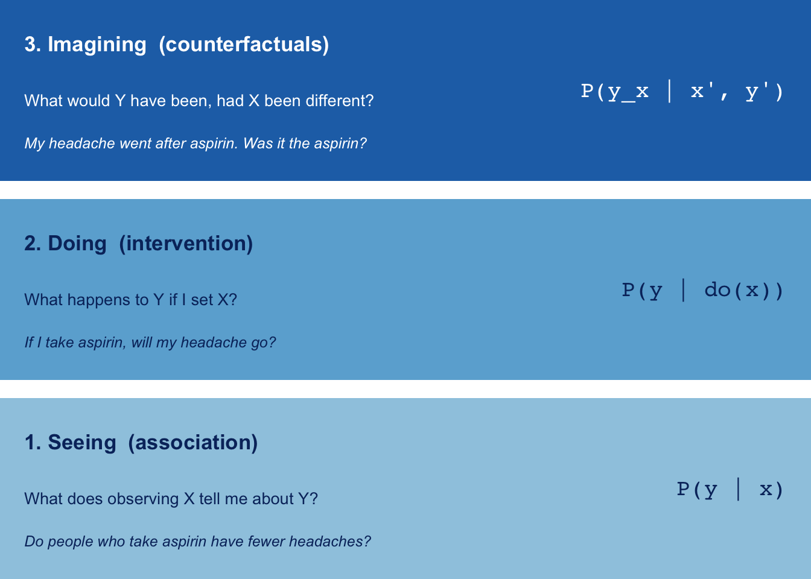
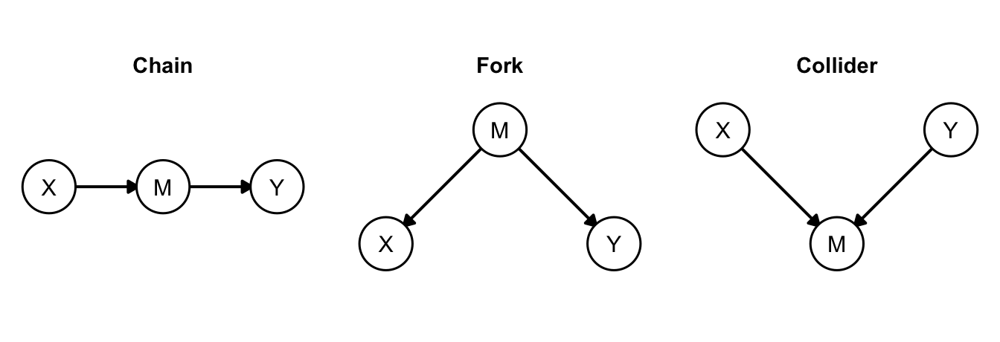
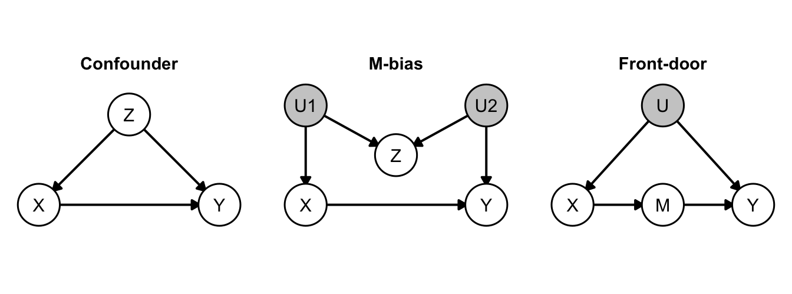

Judea Pearl, the do-Calculus and the Ladder of Causation
From Bayesian networks to the maths of ‘what if’, and why it matters for AI
An introduction to Judea Pearl: his life, the three rungs of the ladder of causation, causal diagrams, the backdoor and front-door criteria, the three rules of the do-calculus and counterfactuals, with R checks and a look at what it means for AI.
probability
causality
ai
statistics
Author
Paul Milne
Published
October 23, 2026
Every statistics course repeats that correlation is not causation. Almost none of them say what causation is, or how to get from data to a causal answer when you can’t run an experiment. Judea Pearl spent forty years building the missing machinery: a language for causal assumptions (diagrams), an algebra for answering causal questions (the do-calculus), and a hierarchy that says which questions each kind of data can answer (the ladder of causation).
This post is a tour of that machinery. It covers the person, the three rungs, the mathematics, working R checks of each idea, and why the work matters for artificial intelligence, both in how modern AI began and in what it is still missing.
A note on sources
The biographical and historical details below are from memory of the standard sources (Pearl’s own books, his Turing Award citation and the usual histories). Check specific dates, titles and attributions before quoting them. The mathematics and every number in the code outputs are computed here.
Who is Judea Pearl?
Judea Pearl was born in Tel Aviv in 1936 and trained as an electrical engineer at the Technion, later taking graduate degrees in the United States, including a PhD from the Polytechnic Institute of Brooklyn. After industrial research work on electronic devices he joined UCLA in 1970, where he built the Cognitive Systems Laboratory and has worked ever since.
His career has two distinct halves, and the second grew out of the limits of the first.
Probabilistic reasoning for AI (1980s). At the time, AI reasoned with logic rules and ad-hoc “certainty factors”. Pearl argued that uncertainty should be handled by probability theory, and made that practical by representing a joint distribution as a Bayesian network: a directed graph in which each variable depends only on its parents. His 1982 paper on message passing in trees and his 1988 book Probabilistic Reasoning in Intelligent Systems introduced belief propagation, an efficient way to compute posteriors by passing local messages along the graph.
Causality (1990s onward). Pearl came to think that a Bayesian network, however good at prediction, says nothing reliable about what happens when you act. His 1995 Biometrika paper “Causal diagrams for empirical research” introduced the do-calculus, and his book Causality (2000, second edition 2009) set out the full theory. The Book of Why (2018, written with Dana Mackenzie) is the popular version and the source of the “ladder of causation”.
He received the ACM Turing Award for 2011 “for fundamental contributions to artificial intelligence through the development of a calculus for probabilistic and causal reasoning”. The citation names both halves.
Pearl is also known beyond science. His son Daniel, a Wall Street Journal reporter, was kidnapped and murdered in Pakistan in 2002, and the family set up the Daniel Pearl Foundation in his memory.
What came before
Pearl did not invent causal thinking from nothing. The pieces he unified were scattered across fields that barely spoke to each other.
Sewall Wright (1921) drew path diagrams for guinea-pig coat colours, the first causal graphs, but the method stayed inside genetics and econometrics.
R. A. Fisher gave the randomised experiment its modern form in the 1920s and 30s. Randomisation works because it deletes the arrows into treatment, which we’ll see is exactly what Pearl’s \(do(\cdot)\) operator does to a diagram.
Jerzy Neyman (1923) and Donald Rubin (1970s) developed potential outcomes, the other major formalism, in which each unit has an outcome under each treatment.
Trygve Haavelmo (1940s) argued that structural equations in economics describe how a system responds to intervention, not just how it is distributed.
Statisticians such as Simpson (1951) documented paradoxes, but statistics had no vocabulary to say which of the two conflicting answers was right.
Pearl’s contribution was to put these into one framework with a precise graphical language, and to prove which causal quantities can be computed from which data.
The ladder of causation
Pearl sorts all causal reasoning into three levels, which he calls rungs. Each rung asks a qualitatively different question, and, crucially, data on a lower rung can never answer a higher-rung question without extra assumptions.
Show code
rungs <-tibble(ymin =c(0, 1.1, 2.2),ymax =c(1, 2.1, 3.2),fill =c("#9ecae1", "#6baed6", "#2171b5"),txt =c("#08306b", "#08306b", "white"),title =c("1. Seeing (association)","2. Doing (intervention)","3. Imagining (counterfactuals)"),q =c("What does observing X tell me about Y?","What happens to Y if I set X?","What would Y have been, had X been different?"),sym =c("P(y | x)", "P(y | do(x))", "P(y_x | x', y')"),ex =c("Do people who take aspirin have fewer headaches?","If I take aspirin, will my headache go?","My headache went after aspirin. Was it the aspirin?"))ggplot(rungs) +geom_rect(aes(xmin =0, xmax =10, ymin = ymin, ymax = ymax, fill = fill)) +geom_text(aes(x =0.3, y = ymax -0.2, label = title, colour = txt),hjust =0, vjust =1, fontface ="bold", size =4.6) +geom_text(aes(x =0.3, y = ymax -0.52, label = q, colour = txt),hjust =0, vjust =1, size =3.6) +geom_text(aes(x =0.3, y = ymin +0.18, label = ex, colour = txt),hjust =0, vjust =0, size =3.3, fontface ="italic") +geom_text(aes(x =9.7, y = (ymin + ymax) /2, label = sym, colour = txt),hjust =1, size =5, family ="mono") +scale_fill_identity() +scale_colour_identity() +coord_cartesian(xlim =c(0, 10), ylim =c(0, 3.2), expand =FALSE) +theme_void()

Figure 1: The three rungs of the ladder of causation. Each rung needs strictly more causal knowledge than the one below it.
Rung 1, seeing. Pure statistics lives here: conditional probabilities, regression, and today most of machine learning. Bayes’ theorem, as in the prosecutor’s fallacy, is a rung-1 tool. It tells you how to update beliefs on evidence, but not what would happen if you changed something.
Rung 2, doing. Here we ask about the consequences of deliberate action. The key notation is \(P(y \mid do(x))\): the distribution of \(Y\) in a world where \(X\) has been forced to \(x\), not merely observed there. A randomised trial measures it directly. Observational data can too, if the causal structure is known.
Rung 3, imagining. Counterfactuals concern a specific individual and a specific alternative history: “Would this patient have recovered had they not been treated?” The quantity \(P(y_x \mid x', y')\) reads “the probability that \(Y\) would have been \(y\) had \(X\) been \(x\), given that we actually saw \(x'\) and \(y'\)”. Responsibility, blame, regret and explanation all live here.
A tidy way to remember the difference: the rooster’s crow predicts sunrise (rung 1) but silencing the rooster doesn’t stop the sun (rung 2), and “had the rooster not crowed, would the sun still have risen?” is a counterfactual (rung 3) with an obvious answer that no dataset contains.
Same data, different worlds
Why can’t rung-1 data reach rung 2? Because very different causal worlds can produce identical observational distributions. Here are two models with the same joint distribution of \((X, Y)\).
Model A:\(X\) is a fair coin; \(Y\) depends on \(X\): \(P(Y{=}1 \mid X) = 0.3 + 0.4X\).
Model B: a hidden coin \(U\); \(X\) is just a copy of \(U\); \(Y\) depends on \(U\) with the same formula, and \(X\) has no effect on \(Y\).
Show code
n <-1e6# Model A: X causes Yxa <-rbinom(n, 1, 0.5)ya <-rbinom(n, 1, 0.3+0.4* xa)# Model B: hidden U drives both; X is a copy of Uub <-rbinom(n, 1, 0.5)xb <- ubyb <-rbinom(n, 1, 0.3+0.4* ub)# intervening: set X by an outside coindo_a <-function(x) mean(rbinom(n, 1, 0.3+0.4* x))do_b <-function(x) mean(rbinom(n, 1, 0.3+0.4* ub)) # X has no arrow into Ytibble(model =c("A: X causes Y", "B: X is a copy of a hidden cause"),`P(Y=1 | X=1)`=c(mean(ya[xa ==1]), mean(yb[xb ==1])),`P(Y=1 | X=0)`=c(mean(ya[xa ==0]), mean(yb[xb ==0])),`P(Y=1 | do(X=1))`=c(do_a(1), do_b(1)),`P(Y=1 | do(X=0))`=c(do_a(0), do_b(0))) |>mutate(across(where(is.numeric), \(v) round(v, 3))) |> knitr::kable()
model
P(Y=1 | X=1)
P(Y=1 | X=0)
P(Y=1 | do(X=1))
P(Y=1 | do(X=0))
A: X causes Y
0.700
0.300
0.700
0.299
B: X is a copy of a hidden cause
0.699
0.299
0.501
0.500
The observational columns are identical, and the interventional columns are not: in model A, forcing \(X\) moves \(Y\) by 0.4, and in model B it does nothing. No amount of rung-1 data separates them. You need to say which model you believe, and that is what a causal diagram does.
Causal diagrams and the three basic structures
A structural causal model (SCM) assigns each variable a function of its direct causes (its parents) plus independent noise:
\[
X_i := f_i(\mathrm{pa}_i,\, U_i).
\]
Drawing an arrow from each parent to its child gives a directed acyclic graph (DAG). The graph is the qualitative content of the model: it encodes which variables listen to which, and, just as importantly, which don’t.
Every DAG is built from three elementary patterns, and each carries a different statistical signature.
Show code
# --- graph utilities (edges: data.frame with columns from, to) -----------parents_of <-function(e, v) e$from[e$to == v]children_of <-function(e, v) e$to[e$from == v]closure <-function(e, vs, step) { out <- vsrepeat { new <-setdiff(unlist(lapply(out, \(v) step(e, v))), out)if (!length(new)) break out <-c(out, new) } out}ancestors_of <-function(e, vs) closure(e, vs, parents_of)descendants_of <-function(e, vs) closure(e, vs, children_of)cut_in <-function(e, nodes) e[!(e$to %in% nodes), ] # delete arrows INTO nodescut_out <-function(e, nodes) e[!(e$from %in% nodes), ] # delete arrows OUT OF nodes# d-separation via the moralised ancestral graphd_sep <-function(e, x, y, z =character()) { anc <-ancestors_of(e, c(x, y, z)) sub <- e[e$from %in% anc & e$to %in% anc, ] und <-data.frame(a = sub$from, b = sub$to)for (v in anc) { p <- sub$from[sub$to == v]if (length(p) >1) { cm <-t(combn(p, 2)) und <-rbind(und, data.frame(a = cm[, 1], b = cm[, 2])) } } und <- und[!(und$a %in% z | und$b %in% z), ] reach <-setdiff(x, z) frontier <- reachrepeat { nb <-setdiff(unique(c(und$b[und$a %in% frontier], und$a[und$b %in% frontier])), reach)if (!length(nb)) break reach <-c(reach, nb) frontier <- nb }!any(y %in% reach)}# backdoor criterion: Z has no descendant of X, and blocks every path# that starts with an arrow INTO Xbackdoor_ok <-function(e, x, y, z) {!any(z %in%descendants_of(e, x)) &&d_sep(cut_out(e, x), x, y, z)}# all minimal valid adjustment sets drawn from observed variablesadjustment_sets <-function(e, x, y, latent =character()) { cand <-setdiff(unique(c(e$from, e$to)), c(x, y, latent)) ok <-list()for (k in0:length(cand)) { combs <-if (k ==0) list(character()) elsecombn(cand, k, simplify =FALSE)for (s in combs) if (backdoor_ok(e, x, y, s)) ok[[length(ok) +1]] <- s }Filter(\(s) !any(vapply(ok, \(t) length(t) <length(s) &&all(t %in% s), logical(1))), ok)}fmt_sets <-function(s) {if (!length(s)) return("none")paste(vapply(s, \(v) if (length(v)) paste0("{", paste(v, collapse =", "), "}") else"{} (nothing)",""), collapse ="; ")}# --- drawing -------------------------------------------------------------draw_dag <-function(nodes, edges) { lv <-unique(nodes$graph) seg <- edges |>left_join(select(nodes, graph, from = name, x, y), by =c("graph", "from")) |>left_join(select(nodes, graph, to = name, xend = x, yend = y), by =c("graph", "to")) |>mutate(len =sqrt((xend - x)^2+ (yend - y)^2),x2 = x + (xend - x) * (len -0.22) / len, y2 = y + (yend - y) * (len -0.22) / len,x1 = x + (xend - x) *0.22/ len, y1 = y + (yend - y) *0.22/ len,graph =factor(graph, levels = lv)) nodes <-mutate(nodes, graph =factor(graph, levels = lv))ggplot() +geom_segment(data = seg, aes(x = x1, y = y1, xend = x2, yend = y2),arrow =arrow(length =unit(0.2, "cm"), type ="closed"), linewidth =0.7) +geom_point(data = nodes, aes(x, y, fill = latent), shape =21, size =12, stroke =0.8) +geom_text(data = nodes, aes(x, y, label = name), size =4) +scale_fill_manual(values =c(`FALSE`="white", `TRUE`="grey80"), guide ="none") +facet_wrap(~graph, nrow =1) +coord_fixed(xlim =c(-0.3, 2.3), ylim =c(-0.3, 1.3)) +theme_void() +theme(strip.text =element_text(face ="bold", size =11, margin =margin(b =6)))}
Show code
motif_nodes <-bind_rows(tibble(graph ="Chain", name =c("X", "M", "Y"), x =c(0, 1, 2), y =0.5),tibble(graph ="Fork", name =c("X", "M", "Y"), x =c(0, 1, 2), y =c(0, 1, 0)),tibble(graph ="Collider", name =c("X", "M", "Y"), x =c(0, 1, 2), y =c(1, 0, 1))) |>mutate(latent =FALSE)motif_edges <-bind_rows(tibble(graph ="Chain", from =c("X", "M"), to =c("M", "Y")),tibble(graph ="Fork", from =c("M", "M"), to =c("X", "Y")),tibble(graph ="Collider", from =c("X", "Y"), to =c("M", "M")))draw_dag(motif_nodes, motif_edges)

Figure 2: The three building blocks of every causal diagram: a chain (mediator), a fork (common cause) and a collider (common effect).
Show code
motif_tab <-lapply(c("Chain", "Fork", "Collider"), \(g) { e <- motif_edges |>filter(graph == g) |>select(from, to)tibble(structure = g,`X, Y independent?`=d_sep(e, "X", "Y"),`X, Y independent given M?`=d_sep(e, "X", "Y", "M"))}) |>bind_rows()knitr::kable(motif_tab)
structure
X, Y independent?
X, Y independent given M?
Chain
FALSE
TRUE
Fork
FALSE
TRUE
Collider
TRUE
FALSE
In a chain (\(X \to M \to Y\)) the association flows through \(M\). Conditioning on \(M\) blocks it.
In a fork (\(X \leftarrow M \to Y\)) \(M\) is a common cause (a confounder), which creates a spurious association between \(X\) and \(Y\). Conditioning on \(M\) removes it.
In a collider (\(X \to M \leftarrow Y\)) the two causes are independent, but conditioning on the common effect \(M\)creates a dependence between them.
The last is the surprising one, and it is the rule that Pearl’s d-separation criterion generalises: a path is blocked by a set \(Z\) if it contains a non-collider in \(Z\), or a collider that is neither in \(Z\) nor has a descendant in \(Z\). The d_sep function above implements it by the standard moralised-ancestral-graph test.
Colliders in action
Suppose talent and looks are independent in the general population, but a casting director only hires people whose combination of the two is high enough. Among those hired, the two are negatively correlated: someone with modest talent must be good-looking to have got the job.
This selection effect, also called Berkson’s paradox, is a standard source of spurious findings (“why are the cleverest students so clumsy?”) and a good reason not to “control for everything”. It also has a cosmological cousin: Martin Rees’s fine-tuning argument is a statement about the universes in which observers exist, so any inference from “we observe these constants” conditions on the collider “observers exist”.
Simpson’s paradox, resolved
Here is the classic reversal, using the figures usually quoted for a 1980s comparison of two treatments for kidney stones: open surgery (A) and percutaneous nephrolithotomy (B).
Treatment A does better for small stones, better for large stones, and yet B looks better overall. Whether the paradox is a paradox, or which table to trust, depends on the causal story. Doctors give the harder open surgery to the harder cases, so stone size \(Z\) influences both treatment \(X\) and recovery \(Y\): \(Z\) is a confounder.
Adjusting for stone size, weighting each treatment’s within-size rates by how common each size is in the whole population, reverses the naive ranking and favours A. The formula used is the backdoor adjustment:
This answer is only right because the diagram says size is a confounder. If instead the “\(Z\)” were a post-treatment variable (say, a measured side effect of the treatment), adjusting for it would be the wrong move, and the aggregated table would be the right one. The same numbers can give opposite advice. The graph decides, and the data cannot.
Interventions as graph surgery
Pearl’s central idea is that an intervention is a local change to the model. Setting \(X\) to \(x\) replaces the equation for \(X\) with the constant \(x\), which deletes every arrow into \(X\) and leaves all other equations alone. The result is the truncated factorisation: if the joint distribution factorises over the DAG as \(P(v) = \prod_i P(v_i \mid \mathrm{pa}_i)\), then
with the factors for the intervened variables dropped. This is exactly what randomisation does: it makes treatment independent of everything upstream.
The backdoor criterion
When can we express \(P(y \mid do(x))\) using only observational quantities? The simplest sufficient condition is the backdoor criterion: a set \(Z\) satisfies it relative to \((X, Y)\) if
no member of \(Z\) is a descendant of \(X\), and
\(Z\) blocks every path from \(X\) to \(Y\) that starts with an arrow into\(X\) (the “back doors”).
Then the adjustment formula above is valid. Checking condition 2 is a d-separation test on the graph with \(X\)’s outgoing arrows removed, which is how backdoor_ok is written. Here it is on three graphs with different causes of trouble.
Show code
dag_nodes <-bind_rows(tibble(graph ="Confounder", name =c("Z", "X", "Y"), x =c(1, 0, 2), y =c(1, 0, 0), latent =FALSE),tibble(graph ="M-bias", name =c("U1", "U2", "Z", "X", "Y"),x =c(0, 2, 1, 0, 2), y =c(1.1, 1.1, 0.55, 0, 0),latent =c(TRUE, TRUE, FALSE, FALSE, FALSE)),tibble(graph ="Front-door", name =c("U", "X", "M", "Y"),x =c(1, 0, 1, 2), y =c(1.1, 0, 0, 0), latent =c(TRUE, FALSE, FALSE, FALSE)))dag_edges <-bind_rows(tibble(graph ="Confounder", from =c("Z", "Z", "X"), to =c("X", "Y", "Y")),tibble(graph ="M-bias", from =c("U1", "U1", "U2", "U2", "X"), to =c("X", "Z", "Z", "Y", "Y")),tibble(graph ="Front-door", from =c("U", "U", "X", "M"), to =c("X", "Y", "M", "Y")))draw_dag(dag_nodes, dag_edges)

Figure 3: Three diagrams. Grey nodes are unobserved. Left: a simple confounder. Middle: ‘M-bias’, where the observed Z is a collider. Right: the front-door graph, where the confounder U is never observed.
Confounder: adjust for \(Z\), as in the kidney-stone example.
M-bias: the empty set is valid. \(Z\) is not a confounder; it is a collider on the path \(X \leftarrow U_1 \to Z \leftarrow U_2 \to Y\), which is already blocked. Adjusting for it would open the path and introduce bias. Habitually controlling for every pre-treatment variable is not safe.
Front-door: there is no valid set among the observed variables, since the only observed candidate \(M\) is a descendant of \(X\). The backdoor route is closed to us. This is where the do-calculus earns its keep.
The do-calculus
The backdoor criterion is a special case of something more general. Pearl’s do-calculus consists of three rules for transforming expressions containing \(do(\cdot)\). Write \(G_{\overline{X}}\) for the graph with arrows into\(X\) deleted, and \(G_{\underline{Z}}\) for the graph with arrows out of\(Z\) deleted. For disjoint sets of variables \(X, Y, Z, W\):
Rule 1: insert or delete an observation.\[
P(y \mid do(x), z, w) = P(y \mid do(x), w) \quad\text{if } (Y \perp Z \mid X, W)_{G_{\overline{X}}}.
\]
Rule 2: exchange an action for an observation.\[
P(y \mid do(x), do(z), w) = P(y \mid do(x), z, w) \quad\text{if } (Y \perp Z \mid X, W)_{G_{\overline{X}\,\underline{Z}}}.
\]
Rule 3: insert or delete an action.\[
P(y \mid do(x), do(z), w) = P(y \mid do(x), w) \quad\text{if } (Y \perp Z \mid X, W)_{G_{\overline{X}\,\overline{Z(W)}}},
\] where \(Z(W)\) is the set of \(Z\)-nodes that are not ancestors of any \(W\)-node in \(G_{\overline{X}}\).
Each rule says that when a certain d-separation holds in a surgically modified graph, two interventional or observational expressions are equal. Rule 1 is d-separation itself; Rule 2 is the licence to treat “seeing” as “doing” once confounding is cut away; Rule 3 says some interventions have no effect at all.
The results that make this more than a curiosity are:
Soundness: every equality derived with the rules is true in every model compatible with the graph.
Completeness (Shpitser & Pearl, and independently Huang & Valtorta, 2006): if a causal effect can be identified from the graph and the observational distribution at all, then some sequence of do-calculus steps will derive it. An algorithm, the ID algorithm, finds one automatically, and returns “not identifiable” otherwise.
So whether a causal question is answerable from your data is a decidable property of the diagram.
The backdoor formula, derived
Let \(Z\) satisfy the backdoor criterion. Then
\[
\begin{aligned}
P(y \mid do(x)) &= \sum_z P(y \mid do(x), z)\,P(z \mid do(x)) && \text{(probability)}\\
&= \sum_z P(y \mid x, z)\,P(z \mid do(x)) && \text{(Rule 2: } Y \perp X \mid Z \text{ once back doors are cut)}\\
&= \sum_z P(y \mid x, z)\,P(z) && \text{(Rule 3: } Z \perp X \text{ in } G_{\overline{X}}\text{, since } Z \text{ is not a descendant)}.
\end{aligned}
\]
The front-door formula
Now the harder case: \(U\) is never observed, so we can’t adjust for it, but we have a mediator \(M\) that is shielded from \(U\). A (hypothetical) example: genotype \(U\) affects both smoking \(X\) and cancer \(Y\) and cannot be measured; smoking acts on cancer only through tar deposits \(M\). Three applications of the rules give
The reasoning has three steps, each licensed by a rule. Here the graph conditions are checked by machine.
Show code
fd <- dag_edges |>filter(graph =="Front-door") |>select(from, to)tibble(step =c("1. P(m | do(x)) = P(m | x) [Rule 2: X's own effect on M is unconfounded]","2. P(y | do(m)) = sum_x' P(y | m, x') P(x') [backdoor via X]","3. P(y | do(x), do(m)) = P(y | do(m)) [Rule 3: once M is set, X is irrelevant]"),`graph condition holds?`=c(d_sep(cut_out(fd, "X"), "X", "M"),backdoor_ok(fd, "M", "Y", "X"),d_sep(cut_in(fd, c("X", "M")), "X", "Y", "M") )) |> knitr::kable()
step
graph condition holds?
1. P(m | do(x)) = P(m | x) [Rule 2: X’s own effect on M is unconfounded]
TRUE
2. P(y | do(m)) = sum_x’ P(y | m, x’) P(x’) [backdoor via X]
TRUE
3. P(y | do(x), do(m)) = P(y | do(m)) [Rule 3: once M is set, X is irrelevant]
TRUE
Now the numerical test. Simulate a world with a genuine hidden confounder, so we know the true answer, and see whether the front-door formula recovers it from only the observed \((X, M, Y)\).
Show code
# SCM: U -> X, U -> Y, X -> M -> Y (U hidden)n <-2e6sim <-function(do_x =NULL) { u <-rbinom(n, 1, 0.5) x <-if (is.null(do_x)) rbinom(n, 1, 0.2+0.6* u) elserep(do_x, n) m <-rbinom(n, 1, 0.1+0.7* x) y <-rbinom(n, 1, 0.1+0.5* m +0.3* u)data.frame(x, m, y)}d <-sim()# ground truth: actually intervene in the simulatortruth <-c(`do(X=0)`=mean(sim(0)$y), `do(X=1)`=mean(sim(1)$y))# naive: just condition on Xnaive <-c(`do(X=0)`=mean(d$y[d$x ==0]), `do(X=1)`=mean(d$y[d$x ==1]))# front-door formula using only observed x, m, yfront <-function(d, x) { px <-prop.table(table(d$x))sum(sapply(0:1, \(m) { pm <-mean(d$m[d$x == x] == m) inner <-sum(sapply(0:1, \(xp) mean(d$y[d$x == xp & d$m == m]) * px[as.character(xp)])) pm * inner }))}fdoor <-c(`do(X=0)`=front(d, 0), `do(X=1)`=front(d, 1))res <-rbind(`True (simulated intervention)`= truth,`Naive conditioning on X`= naive,`Front-door formula`= fdoor)res <-cbind(res, `effect (do1 - do0)`= res[, 2] - res[, 1])knitr::kable(round(res, 3))
do(X=0)
do(X=1)
effect (do1 - do0)
True (simulated intervention)
0.300
0.650
0.350
Naive conditioning on X
0.210
0.740
0.530
Front-door formula
0.299
0.651
0.352
The naive contrast overstates the effect, because people with high \(U\) are both more likely to have \(X = 1\) and more likely to have \(Y = 1\). The front-door formula, which never sees \(U\), lands on the interventional truth.
Rung 3: counterfactuals
Rungs 1 and 2 describe populations. Counterfactuals describe one unit. Pearl’s recipe has three steps, given a fully specified SCM and an observed outcome:
Abduction: update the noise terms \(U\) to be consistent with what was observed.
Action: apply the intervention \(do(X = x')\) to the model.
Prediction: compute the outcome in the modified model, using the updated \(U\).
The result is the counterfactual \(Y_{x'}(u)\). Counterfactuals are defined inside a model, as a mutilated model plus the unit’s own unobserved background, rather than as events in other physical worlds. That is a useful contrast with the many-worlds interpretation, where the alternative branches are taken to be real. Pearl’s counterfactuals are a way of reasoning, whatever one thinks about branching universes.
Probability of necessity
A very practical rung-3 quantity is the probability of necessity,
\[
\mathrm{PN} = P(Y_{x'} = 0 \mid X = x,\, Y = 1),
\]
“given that the treated patient recovered, the chance they would not have recovered without treatment”. It is what a court means by “but for” causation, and it is not identified by experiments alone. Tian and Pearl (2000) showed that experimental and observational data nevertheless bound it:
We can test this because we can build a population in which each person’s response type is known. There are four types: doomed (never recovers), immune (always recovers), causal (recovers only if treated) and preventive (recovers only if untreated). Doctors tend to treat the people most likely to benefit, so treatment is confounded.
Show code
types <-tibble(type =c("doomed", "immune", "causal", "preventive"),p =c(0.30, 0.25, 0.35, 0.10), # population sharey0 =c(0, 1, 0, 1), # recovery without treatmenty1 =c(0, 1, 1, 0), # recovery with treatmentpx =c(0.30, 0.50, 0.70, 0.40) # P(treated | type): confounded) |>mutate(p_x1 = p * px, # P(type, X = 1)p_x0 = p * (1- px) # P(type, X = 0))# observational probabilitiesP_x1y1 <-sum(types$p_x1 * types$y1)P_x0y0 <-sum(types$p_x0 * (1- types$y0))P_y1 <-sum(types$p_x1 * types$y1) +sum(types$p_x0 * types$y0)# interventional (experimental) probabilitiesP_y_do0 <-sum(types$p * types$y0)P_y_do1 <-sum(types$p * types$y1)lower <-max(0, (P_y1 - P_y_do0) / P_x1y1)upper <-min(1, ((1- P_y_do0) - P_x0y0) / P_x1y1)# ground truth PN, available only because we know each person's typepn_true <-sum(types$p_x1[types$type =="causal"]) /sum(types$p_x1 * types$y1)tibble(quantity =c("Naive risk difference P(y|x) - P(y|x')","Causal effect P(y|do(x)) - P(y|do(x'))","PN lower bound", "PN true value (needs the types)", "PN upper bound"),value =c(P_x1y1 /sum(types$p_x1) -sum(types$p_x0 * types$y0) /sum(types$p_x0), P_y_do1 - P_y_do0, lower, pn_true, upper)) |> knitr::kable(digits =3)
quantity
value
Naive risk difference P(y|x) - P(y|x’)
0.370
Causal effect P(y|do(x)) - P(y|do(x’))
0.250
PN lower bound
0.554
PN true value (needs the types)
0.662
PN upper bound
0.905
The true probability of necessity lies inside the bounds, as the theory requires, but the bounds are not tight: experiments and observations together say it is somewhere in an interval, and only extra assumptions (for example, no preventive types, called monotonicity) or knowledge of the mechanism can pin it down. That is the content of “rung 3 needs more than rung 2”.
Why it matters for AI
Genesis: how Pearl shaped early modern AI
Before the late 1980s, the dominant AI approach to uncertainty was to attach ad-hoc “certainty factors” to rules, as in the medical expert system MYCIN, or to avoid numbers altogether. Probability was dismissed as intractable: a joint distribution over \(n\) binary variables has \(2^n\) entries.
Pearl’s insight was that real domains have structure, since most variables are directly relevant to only a few others, and that a DAG captures that structure and makes inference local. Belief propagation computes exact marginals on trees by passing messages between neighbours, in time linear in the number of variables. The same machinery spread through the field:
Probabilistic graphical models, developed by Lauritzen and Spiegelhalter, Jordan, Koller and Friedman and many others, built a whole toolkit (junction trees, variational inference, structure learning) on Bayesian networks.
Hidden Markov models and Kalman filters, the workhorses of speech recognition and tracking, turned out to be special cases of belief propagation on chains.
Error-correcting codes: the decoders for turbo and LDPC codes, used in mobile networks and satellite links, were recognised in the late 1990s as loopy belief propagation (McEliece, MacKay and Cheng’s paper “Turbo decoding as an instance of Pearl’s belief propagation algorithm”). Pearl’s message-passing idea is inside the phone in your pocket.
The 1980s revolution made reasoning under uncertainty a respectable engineering discipline, and set the stage for the data-driven AI that followed.
Ongoing: what modern AI is missing
Pearl’s later complaint is that the field took the first half of his work and mostly ignored the second. In a 2018 essay (Theoretical impediments to machine learning with seven sparks from the causal revolution) he characterised deep learning as, in effect, sophisticated curve fitting: powerful, but confined to rung 1. The issues are concrete.
Distribution shift and robustness. A model that learns \(P(y \mid x)\) is correct only while the data-generating process stays put. Causal mechanisms are the parts that tend to stay stable under change, which is the motivation for invariant risk minimisation (Arjovsky et al.) and for causal representation learning (Schölkopf et al.).
Decisions, not predictions. Recommendation, pricing and treatment systems are used to intervene. Evaluating a new policy from logs of an old one is a rung-2 question, handled by off-policy evaluation and counterfactual reasoning in advertising and reinforcement learning (Bottou et al. and others).
Fairness. “Would this loan decision have been different had the applicant been of another group, all else causally equal?” is a counterfactual, and counterfactual fairness (Kusner et al.) formalises it. Purely associational fairness metrics can be satisfied by models that are plainly discriminatory, and vice versa.
Explanation. Counterfactual explanations (“you would have been approved with an income £3,000 higher”) are rung-3 statements. Regulators increasingly want them.
Large language models. Models trained to predict text have absorbed enormous amounts of causal talk, and can often answer causal questions correctly, but they can also fail in fluent and confident ways. Benchmarks such as CLadder and Corr2Cause were built to separate genuine causal reasoning from pattern recall. Whether next-token prediction can climb the ladder, or only mimic having climbed it, is an open and live debate, and Pearl has been a prominent sceptic.
Agents. An AI agent acts, and every action is an intervention on a system whose logs were generated by other behaviour. Judging whether an agent’s intervention caused an outcome, rather than coincided with it, is a rung-2 and rung-3 problem. The instrumentation ideas in Instrumenting Agent Cybernetics are about observing agent behaviour, and the do-calculus is the natural language for asking what those observations imply.
Caveats and critics
Pearl’s framework is not universally embraced, and honest accounts note the disagreements.
Identification results depend on the diagram being right. The calculus tells you what follows from your assumptions, but cannot validate them from observational data. Sensitivity analysis and domain knowledge remain essential.
The potential-outcomes school (Rubin, Imbens and others) reaches many of the same results by different means, and some statisticians prefer it for its focus on estimation. The two frameworks are formally equivalent in the cases they both cover, and the long-running debate has been more about style and emphasis than about disagreement on the mathematics.
Pearl is known for strong opinions, including about the field’s slowness to adopt graphical methods. Whatever one thinks of his tone, the technical results (soundness, completeness, the front-door and backdoor criteria) are not in dispute.
Takeaways
Pearl has two legacies: Bayesian networks and belief propagation, which gave AI a workable theory of uncertainty in the 1980s, and causal inference, which gave science a formal language for intervention and counterfactuals.
The ladder of causation (seeing, doing, imagining) organises questions by what knowledge they require. Data at one rung cannot answer a question at a higher rung without causal assumptions.
A causal diagram is the assumption set. d-separation reads independence off it, graph surgery models an intervention, and the backdoor and front-door formulas are corollaries of the three do-calculus rules.
The do-calculus is complete: whether a causal effect is identifiable from observational data is a decidable property of the graph.
Counterfactuals need more than experiments, but experiments and observations together can bound them, as with the probability of necessity.
For AI, the lesson is that prediction is not the same as understanding what happens when you act. Robustness, policy evaluation, fairness, explanation and agent oversight are all causal questions, which is why Pearl’s frameworks keep reappearing in current research.
Further reading
Judea Pearl and Dana Mackenzie, The Book of Why (2018). The accessible introduction and source of the ladder.
Judea Pearl, Causality: Models, Reasoning and Inference (2nd ed., 2009). The full theory.
Judea Pearl, Madelyn Glymour and Nicholas Jewell, Causal Inference in Statistics: A Primer (2016). A short textbook.
Judea Pearl, “Causal diagrams for empirical research”, Biometrika (1995). The origin of the do-calculus.
Ilya Shpitser and Judea Pearl, “Identification of joint interventional distributions in recursive semi-Markovian causal models” (2006). Completeness.
Bernhard Schölkopf et al., “Toward causal representation learning”, Proceedings of the IEEE (2021). The machine-learning view.